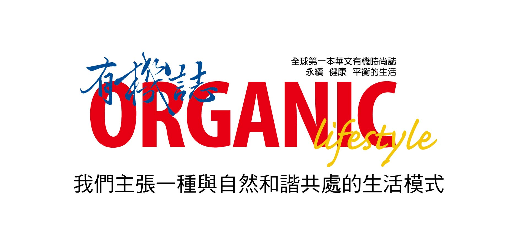
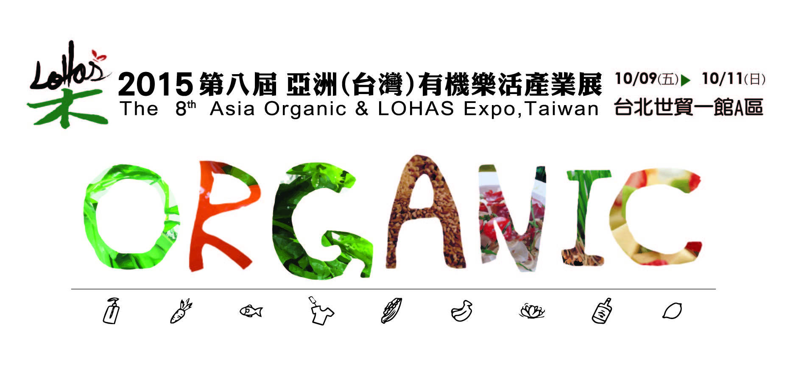

「愛自己，愛地球，
從有機生活開始。」

2007年之後，有機誌首先喊出這樣的呼籲時，
現在這句話已讓許多媒體引用，甚至大多數人郎朗上口時⋯
我們在亞洲推廣的有機生活方式，真的是讓您距離有機生活越來越近了呢！
由《有機誌》主辦的第六屆「2012亞洲有機樂活產業展」，涵蓋了生活中的食、衣、住、行、育、樂各行業不同產品，我們希望除了提供優質生活用品，更重要的是藉由企業與商品的匯聚，落實產業友善地球行動，讓展覽真正做為一個交流平台，傳遞資訊給消費者，在健康、生態平衡中，以及整個地球環境的永續性，我們可以透過綠色消費開始，支持運轉這個世界的經濟去實踐有機大夢，讓世界都能共享有機生活的好處。
我們的宗旨「愛自己，愛地球，從有機生活開始」，傳達出一種十分溫柔與和諧的生活方式，就如同樂活(Lohas)的真意－健康、非侵害、永續性的。樂活，熱愛自己的綠色好生活。
為什麼要參加「有機樂活產業展」？

尋找合作伙伴
全台知名有機、天然相關廠商進駐，包括有機天然產業之生產者、製造商、經銷商、通路商，並有數千名專業買家進場尋找合作伙伴。對於欲開發新品、尋找新通路、擴大銷售市場及增加訂貨量之廠商可帶來極大的效益。
拓展產品∕品牌知名度
創造有機產業的利基市場，鎖定有機、天然的忠實顧客群，明確的區分出對的消費族群，讓參展廠商之品牌可達到最有效的曝光量。藉由與民眾對面的行銷方式，瞭解消費者對產品的看法，並加深品牌∕產品在消費者心中的印象。
開拓品牌國際視野
邀請國外品牌參與，與世界接軌，響應國際有機生活潮流，讓台灣邁向有機國際舞台，充分提供廠商與國際企業交流之機會。